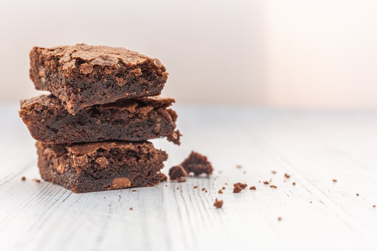

Brownies!
Return to Recipe List

Description
Sought after by sweet connoisseurs everywhere, a brownie is a traditional treat that is commonly marketed to lovers of all things confectionary. Get ready to bake yourself a new sweet tooth in this delicious recipe.
NOTE: This recipe uses a high amount of sugar to create a perfect brownie. If you've suffered been diagnosed with diabetes, we wouldn't recommend this recipe for you.
Ingredients
- A 1/2 cup of butter.
- 1 cup of white sugar.
- 2 eggs for perfection.
- A teaspoon of vanilla extract.
- A 1/3rd of a cup of unsweetened cocoa powder.
- A 1/2 cup of all-purpose flour.
- A 1/4th teaspoon of salt.
- A 1/4th teaspoon of baking powder.
Steps
- Preheat the oven to 350°F. Proceed to step 2 while you wait.
- Let's grease and flour an 8-inch square pan.
- Using a large saucepan, melt a 1/2 cup of butter.
- Stir in your sugar, eggs, and a teaspoon of vanilla.
- Beat in a 1/3rd of a cup of coca, a 1/2 of a cup of flour, salt, and baking powder. Spread the batter into a prepared pan.
- Now it's time to bake in your preheated oven for 25 to thirty minutes. Make sure you don't overcook it!
- The best part has arrived! Pull your brownies out, take a warm bite of gooey goodness, and enjoy the night while it's still young!